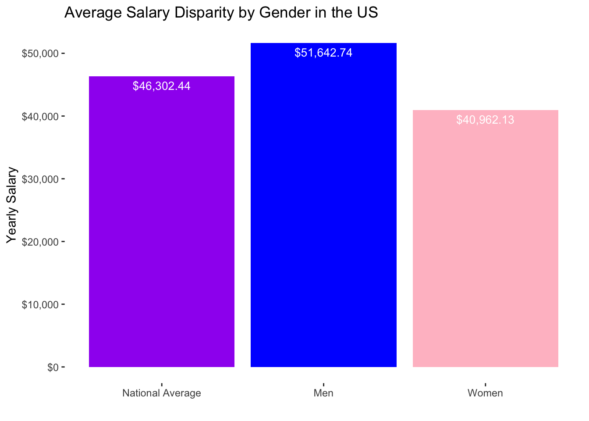

💵The Gigantic Gender Pay Gap💵
Esther Mejia and Shailee Shah
Last updated on 2018-12-21
#load Packages here
library(tidyverse)
library(leaflet)
library(readr)
library(scales)
#reading the .cvs file
Census_data <- read_csv("acs2015_census_tract_data.csv")
Gender_occupation <- read_csv("inc_occ_gender.csv")
Gender_pay_gap <- read_csv("Gender_Pay_Gap.csv")
#data wrangling for the Census_data
#we want to the dataset to only include the information that we are going to work with
#this dataset will be used to show the gender pay gap in Northeastern States in a graph
Clean_Census_data <- Census_data %>%
select(State,TotalPop, Men, Women) %>%
filter(State %in% c("Maine", "Vermont", "New Hampshire", "Massachusetts", "New York","Rhode Island", "Connecticut","Pennsykvania", "New Jeresy")) %>%
group_by(State) %>%
summarize(sum_totalPop = sum(TotalPop), sum_men = sum(Men), sum_women = sum(Women))
#this census dataset is what we are going to join
Cleaner_Census_data<- Census_data %>%
select(State, TotalPop, Men, Women) %>%
group_by(State) %>%
summarize(sum_totalPop = sum(TotalPop), sum_men = sum(Men), sum_women = sum(Women))
#remove 2 observations since they were not states
Joining_Census_data <-Cleaner_Census_data[-c(9,40), ]
#data wrangling for the Gender_pay_gap to join with joining_Census_data
Clean_gender_pay_gap <- Gender_pay_gap %>%
group_by(State) %>%
summarize(Men_Salary=mean(Men_Salary),Women_Salary=mean(Women_Salary)) %>%
mutate(Total_salary = ((Men_Salary + Women_Salary)/2))
#joining the two datasets
Census_Gender_pay_gap <-Joining_Census_data %>%
left_join(Clean_gender_pay_gap, by = "State")
#Separting the dataset to make the data visualization
Cleaner_gender_pay_gap<- rbind(Clean_gender_pay_gap, data.frame(State = "Nationally", t(colMeans(Clean_gender_pay_gap[,-1]))))
Nationally <-Cleaner_gender_pay_gap %>%
slice(51:51) %>%
gather("Men_Salary", "Women_Salary", "Total_salary" ,key = "Gender" , value = "Salary")
Nationally$Gender[Nationally$Gender == "Men_Salary"] <- "Men"
Nationally$Gender[Nationally$Gender == "Women_Salary"] <- "Women"
Nationally$Gender[Nationally$Gender == "Total_salary"] <- "National Average"
#Changing the format of which the variables show up as in the graph
type_levels <- c("National Average", "Men", "Women")
Nationally <- Nationally %>%
mutate(type = factor(Gender, levels = type_levels))
Overview
Women in the United States earn about 80 cents for every dollar earned by men, as illustrated by the graph below. Mind-boggling, right? This gender pay gap refers to the median annual income of all women, compared to median annual income of all men 2. Occupational segregation, motherhood and unconscious biases have fostered these disparities.
The graph below reveals that women on average earn about 10,000 dollars less than men, which is about 6,000 dollars less than the national average.
#This graph is showing the average salary by gender
ggplot(Nationally, aes(x = type, y = Salary, fill = Gender)) +
geom_col(position = "dodge")+
geom_text(aes(label=dollar(Salary)), vjust=1.6, color="white", size=3.5)+
labs(title = "Average Salary Disparity by Gender in the US", x = "", y = "Yearly Salary") +
scale_y_continuous(labels=dollar)+
scale_fill_manual(values = c("National Average" = "purple","Women"= "pink" ,"Men" = "blue"))+
theme(legend.position = 'none')+
theme(panel.background = element_rect(fill = "white"))
Problem Set
To what extent and under what conditions does the gender pay gap persist? How can it be ameliorated? While the gender pay gap has improved from the 1960’s when a woman earned 60 cents for every dollar that a man earned, the gender pay gap still persists today 3
Description of Data
To explore this issue, we wrangled and visualized two data sets from kaggle titled “U.S. Incomes by Occupation and Gender”, which was retrieved from the Bureau of Labor Statistics, and “US Census Demographic Data, which was retrieved from the American Community Survey (ACS). Additionally, we derived data of average salaries by gender in all 50 states from the American Association of University Women’s website. This data was provided in PDF format, so my partner and I manually transformed this data set into an excel spreadsheet for data wrangling.
Why is this important?
If women were paid the same as men, women would gain billions of dollars in earnings every year 4. This would raise their economic status, fostering greater gender equality. Furthermore, women would be able to improve their living conditions if they become divorced or widowed 5.
https://www.wsj.com/articles/parsing-the-gender-pay-gap-1542917969↩
“The Simple Truth about the Gender Pay Gap.” American Association of University Women, www.aauw.org/research/the-simple-truth-about-the-gender-pay-gap/.↩
“Why does the gender wage gap still exist?” CNN, www.cnn.com/videos/cnnmoney/2018/04/10/why-does-teh-wage-gap-still-exist.cnn/video/playlists/womens-issues-worldwide/.↩
“The Simple Truth about the Gender Pay Gap.” American Association of University Women, www.aauw.org/research/the-simple-truth-about-the-gender-pay-gap/.↩
“The gender pay gap.” The Economist, 7 Oct. 2017, www.economist.com/international/2017/10/07/the-gender-pay-gap.↩